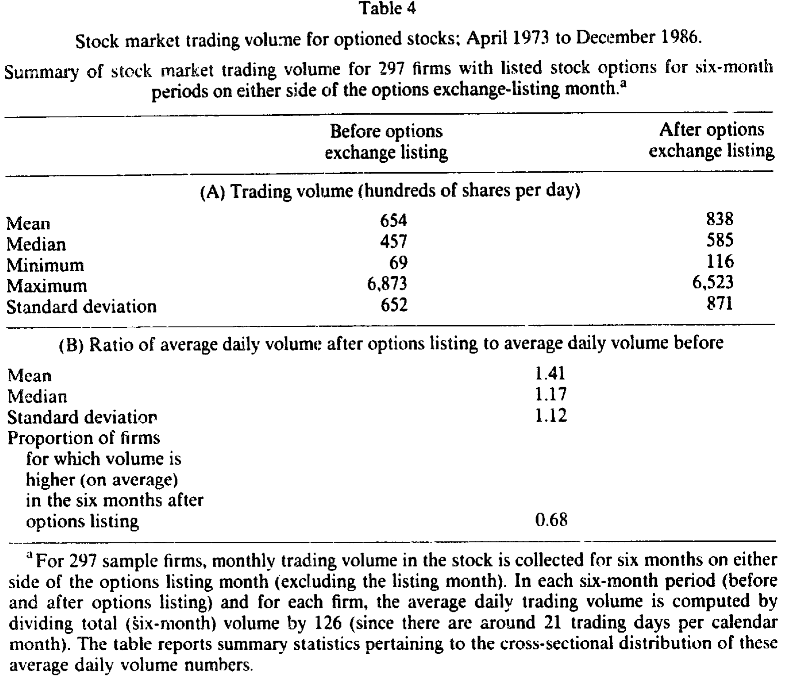
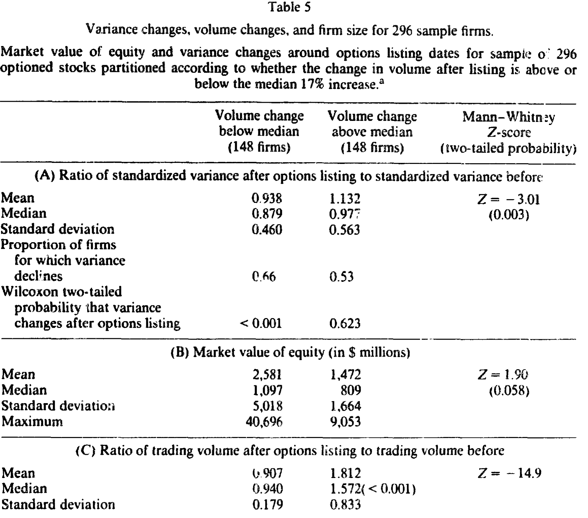
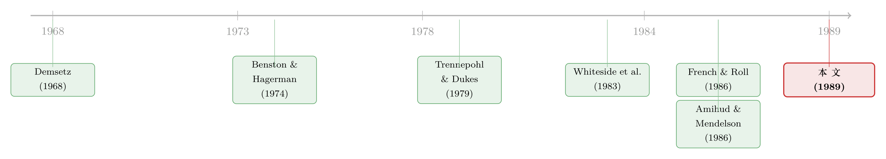

期权上市那天，股票反而「安静」了
本文读的是 Skinner (1989, Journal of Financial Economics)：当一只股票被挂上期权交易所、开始有人买卖它的看涨期权之后，这只股票本身的收益波动率不升反降——视取样窗口不同，方差大约下降了 14%–20%。作者一路追问「是什么降了它」，排除了「交易噪声」，把故事暂时落在「流动性改善」上，但他自己也承认，手里既没有买卖价差的数据，又躲不开一个叫「选择偏误」的幽灵。
1 引言：期权上市，是福还是祸
先讲一个 1983 年的真实场景。
美国证券交易所（AMEX）刚把期权挂到金沙集团（Golden Nugget）的股票上没几个月，这家公司就一纸诉状告上了交易所，理由之一是——「期权损害了金沙的声誉、商誉，以及其公开交易证券的潜在价值」（着重号是作者加的）。同样的担忧，曾让美国证监会（SEC）在 1977 到 1980 年间索性按下暂停键，对任何扩大期权交易的申请一律冻结。
担忧的逻辑听上去很顺：如果有了期权这个「替身」，交易就会从股票本身分流到期权上去，股票市场变薄、流动性变差，价格自然就更容易被一笔大单推来推去——也就是说，波动会变大。这是当时报章上、监管者口中一个相当流行的直觉。
那么，事实究竟如何？这正是本文要回答的问题：
当交易所把期权挂到一只股票上之后，这只股票自身收益的方差，到底是变大了，还是变小了？
这个问题之所以值得认真做一遍，不只是为了给监管者和打官司的公司一个答案。它还连着一个更深的母题：究竟是什么，让股票的波动率随时间变化？ French 和 Roll（1986）发现，股票在交易所开市时段的波动，要明显高于休市时段，他们为此提出两类解释：一类说，是开市时信息到达得更密、被更快地打进价格；另一类说，是「交易」这个动作本身往收益里掺进了噪声。期权上市，恰恰是一个干净的「事件」——它几乎不改变一家公司的基本面，却实打实地改变了围绕这只股票的交易结构。看清它前后发生了什么，等于借来一面镜子，照一照这两类力量谁更重要。
在此之前，前人的结论是一团糨糊。Trennepohl 和 Dukes（1979）、Whiteside、Dukes 和 Dunne（1983）发现期权上市后股票的不可分散风险（beta）略有下降；而 Bansal 一系的研究（文中引为 Maness 等）则下结论说「期权交易对标的证券风险的影响微乎其微」。要么样本窗口太短，要么只盯着 beta。本文用一个跨度十三年、304 家公司的大样本，想把这件事一次说清。
2 一把简单的尺子：方差比
本文的工具朴素到近乎「土」，但正因为朴素，才让人信服。
对每一家公司，作者用期权上市日前后两段等长的日度收益，各估一个收益方差，然后相除，得到一个方差比 (variance ratio)：
$$ \text{variance ratio} = \frac{\widehat{\sigma}^2_{\text{after}}}{\widehat{\sigma}^2_{\text{before}}} $$
比值小于 1，就意味着上市后波动下降。取样窗口取了三档：上市日左右各 100、250、500 个交易日。
接着，一个自然的问题是：万一上市那段日子，正好赶上整个大盘也变安静了呢？那方差下降就跟期权无关，只是「水落船低」。为此，作者做了一步市场波动调整：把每天的个股收益除以当天市场收益的估计标准差（思路上类似一次异方差校正，假定个股方差与市场方差成比例），再用这串调整后的收益去算方差比。文中把它叫市场调整方差比 (market-adjusted variance ratio)。
这一步很关键——它让我们能区分「期权专属的下降」与「全市场共同的下降」。
3 主要结果：方差确实降了
结果相当干净。
未调整的方差比：100 天窗口的中位数是 0.830，意味着波动下降了约 17%；窗口越拉长，降得越多——250 天降到 0.802，500 天降到 0.746。出现下降的公司占比，在 100 天和 500 天窗口为 69%，250 天为 64%。Wilcoxon 符号秩检验的双尾 p 值一律是 0.0001。
这里有个统计细节值得一提：方差比的均值接近 1（约 0.95），但中位数明显小于 1。原因是比值的期望天然大于期望的比值（Jensen 不等式），方差比会向上有偏。所以作者一再强调，中位数才是更可信的那把尺。
市场调整之后呢？下降幅度收窄，但没有消失。100 天窗口的中位数从 0.830 升到 0.926，250 天和 500 天则都接近 0.90。换句话说，大盘波动只能解释一部分，剩下那一截——一个量级在「一成上下」的下降——是这只股票自己的。
那 beta 呢？会不会是系统性风险降了？作者用 Scholes-Williams（1977）、再经 Fowler-Rorke（1983）扩展的方法估了 beta（用这套方法是为了避开重仓股在日度数据下 OLS beta 的上偏）。答案是纹丝不动：250 天窗口上市前 beta 是 1.26（标准误 0.027），上市后几乎一样；三档窗口的符号秩检验 p 值分别是 0.92、0.44、0.25，全都不显著。
也就是说：总波动降了，但不可分散的那部分没动。降下去的，是特质波动。
最后，作者还担心一件事：万一这些方差比本来就该小于 1 呢（毕竟方差比有偏，而且公司间不独立、个股方差又随时间漂移）？于是他造了一个对照样本——把 304 个真实上市日随机派发给 CRSP 上所有股票，算出一个经验分布。对照组（NYSE）方差比的中位数是 1.021，而被挂期权的股票是 0.926，Mann-Whitney 检验显示二者差异显著。顺带一提，这个对照分布的离散度远大于理论 F 分布（NYSE 对照组标准差 0.850，F 分布只有 0.207；99 分位 3.902 对 1.598）——这等于顺手证明了：拿 F 分布去检验日度方差比，根本不靠谱。
到这里，第一个问题有了明确答案：期权上市后，股票变安静了，而且不是大盘的功劳，也不是 beta 的功劳。
4 那么，是什么降了它？—— 三个嫌疑人
真正有意思的部分从这里开始。波动降了，可为什么降？作者像查案一样，逐一审问三个嫌疑人。
4.1 第一个嫌疑人：成交量——结果不降反升
最朴素的猜测，正是引言里那个流行直觉的「镜像」：会不会是交易从股票分流到了期权，股票成交量掉了，于是波动也跟着掉了？French-Roll（1986）说交易时段波动更高，Schwert 说成交量增长与市场波动正相关——照这逻辑，成交量降、波动降，顺理成章。
可数据当场打脸。作者收集了 297 家公司上市前后各六个月的月度成交量，发现成交量不降反升：日均成交量的均值从上市前的 654（百股/日）升到 838，中位数从 457 升到 585；后/前成交量之比的均值是 1.41，中位数 1.17；有 68% 的公司上市后成交量更高。哪怕扣掉全 NYSE 成交量的同期上涨，中位增幅也有约 4%，且显著。

Table 4
这个结果，用作者自己的话说，「令人意外」——因为成交量和波动通常是正相关的，可这里偏偏是「量升、波降」。第一个嫌疑人不仅无罪，还提供了一条反向线索。（关于成交量本身能否预测收益、量与波动的纠缠，可参见《翻看换手率：你买卖股票，多半只是在跟着大盘「再平衡」》。）
4.2 第二个嫌疑人：交易噪声——证据寥寥
那会不会是交易噪声 (trading noise) 降了？
这是 Black（1986）和 French-Roll（1986）的思路：任一时点，证券的观测价格与其内在价值之差，可归为噪声；噪声一部分来自「噪声交易者」，一部分来自交易机制本身的不完美。French-Roll 进一步说，交易者可能彼此误读、过度反应，造成短暂错价，而错价终将被纠正——这会在日度收益里留下滞后 2 期及以后的负自相关。如果期权上市削弱了噪声，那上市后这种负自相关结构应当减弱。
作者于是对每家公司估了如下回归，用一个虚拟变量把「上市前」的自相关单独拎出来检验：
$$ r_t = a_0 + \sum_{i=1}^{15} b_i\, r_{t-i} + \sum_{i=1}^{15} c_i\, D_i\, r_{t-i} + e_t $$
其中 \(r_t\) 是第 \(t\) 日收益，\(D_i\) 是上市前为 1 的虚拟变量。结果：自相关在滞后 2 到 12 期确实为负（与 French-Roll 一致），但上市前后的差别很小。他又算了一个更直接的「实际/隐含方差比」——若交易噪声减弱，这个比值在上市后应更靠近 1。125 天持有期的比值确实从 1.55 降到了 1.20，方向对上了；可标准差太大（1.54 和 1.07），点估计极不精确；而估得准的 10 天持有期，比值在前后都是 1.06/1.07，几乎没动。
证据若有似无。第二个嫌疑人，证据不足，存疑不起诉。
4.3 第三个嫌疑人：流动性——故事最顺，却没有直接证据
排除到这里，剩下一个解释最能把所有事实串起来：期权上市改善了标的股票的流动性。
逻辑是这样的。一方面，期权类似一个高杠杆的股票头寸，对掌握信息的交易者格外有吸引力，于是知情者从股票市场迁徙到期权市场；做市商（专家）面对的「信息更灵」的对手少了，按 Treynor（1971）、Glosten-Milgrom（1985）的逻辑，均衡买卖价差会收窄。另一方面，期权带来的对冲与套利需求又抬高了股票的交易活跃度，按 Demsetz（1968）、Benston-Hagerman（1974）的逻辑，价差也会因此变窄。而经验上，买卖价差与总波动正相关、与交易活跃度负相关、与 beta 无关。
把这三条对照本文的三个发现——波动降、成交量升、beta 不变——简直严丝合缝。Amihud-Mendelson（1986, 1987）那条「价差越高、观测波动越大」的链子，正好把价差和方差扣在了一起。（关于「流动性如何被定价、如何用价格冲击来度量」，可参见《想买走一家公司千分之一的股票，得把价格推高百分之一》；而「观测到的方差里有多少其实是买卖价差的反弹」，则可参见《你以为赚到的那 9%，可能只是收盘价从买价挪到了卖价》。）
但真正关键的一步，恰恰是作者诚实地按下了刹车。
他没有买卖价差的数据，无法直接验证交易成本是否真的下降了。更糟的是，Amihud-Mendelson（1986）说交易成本与公司规模负相关——若流动性故事成立，最小的公司理应经历最大的波动下降。于是他把方差变化对成交量变化和公司规模做了一个横截面回归：
$$ \ln(\widehat{\sigma}^2_{\text{ratio}}) = -0.02 + 0.23\,\ln(\text{volume ratio}) - 0.01\,\ln(\text{size}_i) + e_i $$
括号里的 t 值分别是 (-0.13)、(3.91)、(-0.54)。也就是说——控制住成交量之后，规模与方差变化无关。起作用的是成交量，不是规模。而这，恰恰与流动性解释的预测相左。
证据更细的一刀来自 Table 5：作者按成交量变化是否超过样本中位数（17%）把公司分成两半。结果有两点很扎眼：其一，成交量增幅最大的，是最小的那批公司；其二，那些成交量不升反降的公司，正是方差降得最狠的——成交量低于中位的那组，方差比中位数 0.879、66% 的公司方差下降、Wilcoxon p < 0.001；而成交量高于中位的那组，方差比中位数 0.972、只有 53% 下降、p = 0.623（不显著）。

Table 5
把这两张表合起来读，故事就拧巴了：方差的下降，紧紧跟着成交量的下降走，而不是跟着「规模小、流动性差」走。所以作者只能把流动性解释标注为「暂定 (tentative)」——它最能讲圆，却拿不出直接证据，甚至有一条回归证据与它相悖。
5 一个绕不开的幽灵：选择偏误
读到这里，一个真正聪明的读者会问：等一下，期权上市根本不是随机的啊。
正是。这是全文识别上最大的隐忧，作者把它放在最后单独交代。选择偏误 (selection bias)：交易所挑哪些股票上期权，是有讲究的——它们会挑那些投资者关注度高、交易活跃、而且价格波动大的股票（这三条标准，据作者与 CBOE、AMEX 官员的电话确认，反复出现；也见 Jennings-Starks 1986）。
这就埋下一个陷阱：如果交易所专挑「当下波动高」的股票，那这些股票的波动估计里，多半含有正向的抽样误差。于是「上市前波动高」可能只是运气使然，「上市后波动回落」就只是统计学上的均值回归 (regression to the mean)，跟期权毫无关系。
作者怎么处理？他换用上市前更早、离上市日更远的若干时段去估「上市前方差」，重做了一遍。结果与正文相似——这暗示「上市前的高波动」并不只是紧贴上市日那几天的反常。这是一个聪明的稳健性检验，但它减轻了均值回归的担忧，却没能彻底消除它。这根刺，留到了今天。
6 文献脉络
把这篇论文放回它的坐标系，能看得更清楚。
它其实站在两条河的交汇处。一条是市场微观结构的河：从 Demsetz（1968）把买卖价差理解为「即时性的价格」，到 Benston-Hagerman（1974）把价差拆解到风险与交易量上，再到 Glosten-Milgrom（1985）、Amihud-Mendelson（1986）把逆向选择与流动性写进价差——这条河给了本文「流动性解释」的全部弹药。另一条是期权上市的实证河：Trennepohl-Dukes（1979）、Whiteside-Dukes-Dunne（1983）盯着 beta 看，结论含混；本文把焦点从 beta 挪到总方差，并用大样本 + 对照组把结论钉实。
而真正给本文注入「灵魂问题」的，是 French-Roll（1986）——是「信息」还是「交易噪声」在驱动波动？本文借期权上市这个事件回答说：噪声的证据很弱，更像是流动性（信息结构的迁移）在起作用。

评论与延伸（Q&A + 研究方向）
(a) 几个可能的疑问
Q：方差降了，可这跟「市场变好」是一回事吗？会不会只是信息少了？
不一定是好事，但本文倾向于「不是坏事」。如果是信息到达变少导致波动降，那是另一回事；但本文发现成交量同时上升、beta 不变，更像是同样的信息被一个更有效率（价差更窄）的市场吸收，而非信息本身枯竭。只是这一步缺直接证据。
Q：为什么作者反复强调中位数，而不是均值？
因为方差比是一个比值，由 Jensen 不等式，比值的期望天然大于期望之比，会向上有偏。均值（约 0.95）被这股上偏托着，几乎看不出下降；中位数（100 天 0.830）才把信号显出来。这也是他专门造对照组去刻画「零假设下方差比该长什么样」的原因。
Q：beta 不变，是不是说明期权上市对风险「没影响」？
不是。它说明对系统性风险没影响，但对总风险（含特质波动）有影响。降下去的那一截几乎全在特质波动里。这恰好与「流动性/交易机制」解释相容——价差、噪声这些东西本就是个股特质层面的。
Q：选择偏误这关，作者真的过了吗？
没有完全过。他用「更早的前期窗口」重估，说明高波动不只是贴着上市日的瞬时现象，这削弱了均值回归的解释。但只要上市是「挑高波动股」的非随机事件，就无法排除一部分下降来自回归到均值。这是全文最该被追问的地方。
Q：成交量回归（系数 0.23、规模系数不显著）为什么反而是对流动性解释的「反证」？
因为流动性解释借了 Amihud-Mendelson 的预测：交易成本与规模负相关，故最小的公司应有最大的方差下降。可控制成交量后，规模的系数只有 -0.01、t = -0.54，毫无解释力。起作用的是成交量而非规模——这与流动性解释的具体预测不符，所以作者只能把它标为「暂定」。
Q：和后来「期权市场是否引领股票」的研究是什么关系？
本文问的是「期权存在对股票波动的影响」，后来的文献（如期权成交量能否预测股票收益、期权里有没有价格发现）问的是「期权交易信息对股票价格的影响」，是同一棵树上更细的分枝。（可对照《期权账本里的「先知」：谁在下注，比下注本身更重要》 与《期权报价里，到底有没有「先知」？》；以及期权与标的定价的关系《还不起债的世界里，期权成了 CAPM 漏掉的第二只手》。）
(b) 几个可能的研究问题与提案
1. 把「价差数据」补上，给流动性解释一个直接判决。 【经济故事】本文最大的遗憾是没有买卖价差数据，只能间接推断。今天 TAQ / 高频数据唾手可得，可以直接看期权上市前后标的的有效价差、深度、逆向选择成分（PIN、Kyle's λ）如何变化，从而验证「波动下降 = 价差收窄」这条链。 【可行性】高。事件清晰、数据现成，难点只在于现代期权上市已不像 1970–80 年代那样集中、那样「外生」。可退而用「期权首次上市」的新兴市场样本。
2. 用更干净的外生上市规则，掐死选择偏误。 【经济故事】本文的命门是「交易所专挑高波动股」。若能找到一个基于机械门槛（如最低流通股数、股东数、成交量阈值）的上市规则，就能在门槛附近做断点回归 (RDD)，把「均值回归」从「期权效应」里干净剥离。 【可行性】中。正文恰好列出了上市的硬性标准（≥700 万流通股、≥6000 名股东、过去 12 个月成交≥240 万股、最低股价 $10）——这几条天然适合做 RDD 或 bunching 分析，关键在能否拿到刚好擦边/落选公司的样本。
3. 把同样的实验搬到公司债与信用衍生品上。 【经济故事】当一只债券有了 CDS、或被纳入某个可交易指数，标的债券的波动与流动性会怎样变？这正是本文逻辑在信用市场的镜像：知情者迁移、对冲需求上升、做市商价差变化。考虑到公司债流动性本就稀薄，效应可能更大。 【可行性】中。CDS 起始日、指数纳入日是清晰事件；难点在公司债成交稀疏、波动估计噪声大，需要用成交稀疏稳健的流动性度量（参见《把「成交价」从「成交量」里解放出来——重新丈量公司债的流动性》）。
4. 外资持有人 × 衍生品上市的交互。 【经济故事】如果期权（或权证、可投资度开放）主要把哪一类交易者引了进来——本地知情者还是外资？——那波动与流动性的反应应当随持有人结构而不同。把「谁在场」拆开看，能区分「信息迁移」与「噪声减少」两条机制。 【可行性】中。需要带持有人身份的交易簿或持仓数据（如新兴市场的外资板），识别上可借「可投资度」的政策变动做准自然实验。
参考文献
- Amihud, Y. and H. Mendelson (1986). Asset pricing and the bid-ask spread. Journal of Financial Economics 17(2), 223–249.
- Benston, G. and R. Hagerman (1974). Determinants of bid-asked spreads in the over-the-counter market. Journal of Financial Economics 1(4), 353–364.
- Black, F. (1986). Noise. Journal of Finance 41(3), 529–543.
- Demsetz, H. (1968). The cost of transacting. Quarterly Journal of Economics 82(1), 33–53.
- Fowler, D. J. and C. H. Rorke (1983). Risk measurement when shares are subject to infrequent trading: Comment. Journal of Financial Economics 12(2), 279–283.
- French, K. R. and R. Roll (1986). Stock return variances: The arrival of information and the reaction of traders. Journal of Financial Economics 17(1), 5–26.
- Glosten, L. R. and P. R. Milgrom (1985). Bid, ask and transaction prices in a specialist market with heterogeneously informed traders. Journal of Financial Economics 14(1), 71–100.
- Scholes, M. and J. Williams (1977). Estimating betas from nonsynchronous data. Journal of Financial Economics 5(3), 309–327.
- Skinner, D. J. (1989). Options markets and stock return volatility. Journal of Financial Economics 23(1), 61–78.
- Trennepohl, G. L. and W. P. Dukes (1979). CBOE options and stock volatility. Review of Business and Economic Research 14, 49–60.
- Whiteside, M. M., W. P. Dukes and P. M. Dunne (1983). Short term impact of option trading on underlying securities. Journal of Financial Research 6(4), 313–321.